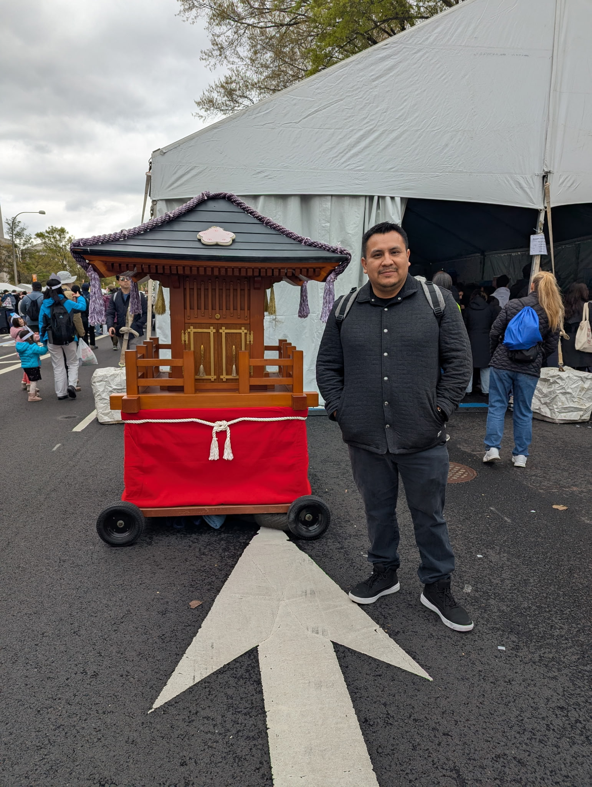

It all started during COVID — stuck at home like everyone else, I stumbled across coding and something just clicked. What began as a way to pass the time quietly turned into a full-on passion. I started with the basics, kept building, kept breaking things, and kept coming back for more. Now I'm ready to turn that passion into a career.
I'm a self-taught developer based in Northern Virginia, and I genuinely love what I do. There's something satisfying about starting with a blank screen and ending up with something real — something people can actually use and interact with. Clean code, thoughtful design, and that feeling when everything finally works the way it should? That's what keeps me going.
When I'm not coding, you'll probably find me out on a trail somewhere with my dog, watching a comedy that has me laughing too loud, or falling down a rabbit hole on a paranormal podcast at midnight. I like building things, I like the outdoors, and I like stories — whether they're written in JavaScript or told around a campfire.
I'm currently looking to make the jump from hobby to career. If you're looking for someone who is hungry to learn, genuinely passionate about front-end development, and not afraid to put in the work — let's talk.

